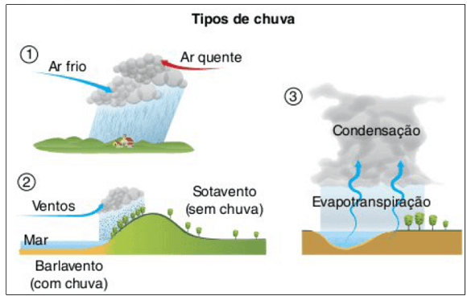
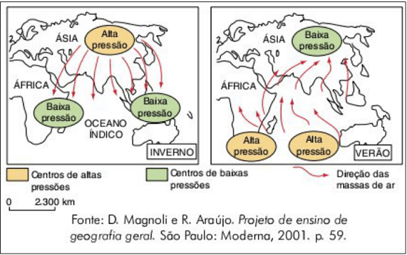
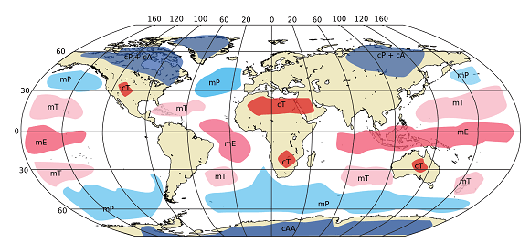
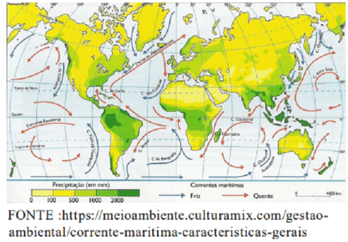

Conteúdo: Latitude; Altitude; Maritimidade; Continentalidade; Correntes Marítimas; Monções; Ventos Alísios; Massas de ar.
Objetivo: Identificar e compreender o papel dos fatores climáticos na definição dos tipos de clima no mundo.
Questão 01
(IFSudMinas 2017) Correlacione, de forma correta, os fatores climáticos:
1- Latitude
2- Altitude
3- Chuva orográfica
4- Massas de ar
(a) Cobre vasta área da superfície, apresenta característica homogênea, causando intensas mudanças climáticas.
(b) Causa ar rarefeito e, quanto mais próximo do nível do mar, maior será a temperatura pela absorção dos raios solares pela superfície.
(c) É um dos mais importantes fatores climáticos, determina as estações do ano e influencia no equilíbrio dos raios solares na superfície terrestre.
(d) Os fatores primordiais são o relevo, o deslocamento das massas de ar e a movimentação dos ventos, associados à maritimidade
Marque a alternativa CORRETA.
a) 1-d, 2-a, 3-c, 4-b.
b) 1-c, 2-b, 3-d, 4-a.
c) 1-a, 2-c, 3-d, 4-b.
d) 1-b, 2-d, 3-a, 4-c.
e) 1-c, 2-d, 3-b, 4-a.
Questão 02
(CFTMG) Associe os tipos de chuva às suas respectivas características.

() Resulta do deslocamento horizontal do ar que, em contato com as regiões elevadas, sofre condensação e consequente precipitação.
() forma-se a partir do encontro de uma massa de ar frio com uma de ar quente.
() Decorre da ascensão vertical do ar que, ao entrar em contato com as camadas de ar frio, sofre condensação e se precipita.
A sequência correta é
a) 1, 2, 3.
b) 1, 3, 2.
c) 2, 1, 3.
d) 3, 2, 1.
Questão 03
(URCA 2014) Marque a única assertiva que traz somente fatores climáticos, isto é, aqueles que contribuem para determinar as condições climáticas de uma região do globo.
a) Correntes marítimas, temperatura do ar, umidade relativa do ar e amplitude térmica.
b) Latitude, pressão altitude, hidrografia e massas de ar.
c) Altitude, massas de ar, maritimidade e latit.
d) Hidrografia, correntes marítimas, latitude e pressão.
Questão 04
(UCPEL 2013) Um dos elementos climáticos mais importantes para a humanidade é a temperatura atmosférica, ou seja, o estado térmico do ar atmosférico, de frio ou de calor. A temperatura pode variar de um lugar para outro, assim como em um mesmo lugar, no decorrer do tempo.
Sobre os fatores responsáveis pela variação da temperatura é correto afirmar que:
a) a influência da latitude ocorre fundamentalmente devido à forma esférica da Terra. A insolação diminui a partir do Equador em direção aos polos, assim a temperatura diminui com o aumento da latitude.
b) altitude exerce grande influência, pois o calor é irradiado da superfície terrestre para cima e a atmosfera aquece por irradiação. Quanto menor a altitude, mais rarefeito se torna o ar, ocorrendo menor irradiação e aumento da temperatura.
c) a temperatura é aumentada pela presença de serras, chapadas e planaltos nas regiões tropicais, via de regra muito quentes, assim como, nas regiões temperadas, as altitudes acentuam ainda mais o rigor da temperatura.
d) a diferença do comportamento térmico das rochas e da água explica o aquecimento e resfriamento mais lento dos continentes, fazendo com que as variações de temperatura nos oceanos sejam maiores.
e) as correntes marítimas não apresentam capacidade de provocar alterações de temperatura nas áreas litorâneas por onde circulam, apesar de possuírem temperaturas diferentes, podendo ser quentes, quando se formam nas áreas equatoriais, ou frias, quando formadas nas áreas polares.
Questão 05
São movimentos horizontais de grandes massas de água provocados pela rotação da Terra e pela ação dos ventos constantes. Elas interagem com a dinâmica das massas de ar, influenciando o clima e definindo áreas secas e chuvosas.
Assinale a alternativa correta relacionada à descrição acima:
a) Fatores Climáticos
b) Ventos alísios.
c) Chuvas orográficas.
d) Correntes marítimas.
e) Maritimidade.
Questão 06
(UERN 2013) As figuras a seguir representam tipos climáticos predominantes no Sul e no Sudeste asiático. As imagens retratam monções de:

a) verão (chuvosa) e de inverno (seca).
b) verão (seca) e de inverno (chuvosa).
c) inverno (chuvosa) e de verão (seca).
d) inverno (seca) e de verão (chuvosa).
Questão 07
Elevação vertical de um ponto qualquer da superfície terrestre em relação ao nível dos oceanos. À medida que a altitude aumenta, a pressão e a densidade do ar diminuem, e as temperaturas ficam mais baixas.
a) Altitude.
b) Massas de ar.
c) Latitude.
d) Maritimidade.
e) Fatores climáticos.
Questão 08
Constituem partes da atmosfera com considerável extensão horizontal e com características homogêneas de temperatura, pressão e umidade.

Assinale a alternativa correta relacionada à descrição acima.
a) Maritimidade.
b) Chuvas frontais.
c) Ventos alísios.
d) Massas de ar.
e) Continentalidade.
Questão 09
(Mackenzie 2020)
CORRENTES MARÍTIMAS

As correntes marítimas se movimentam por todos os oceanos do mundo, transportando calor e, por isso, apresentam influência direta no clima. As correntes frias, por exemplo, podem contribuir para a formação de desertos.
Com base no mapa e no excerto de texto, escolha a alternativa que relacione, corretamente, as correntes marítimas a seus respectivos desertos.
a) Corrente de Humboldt – deserto do Atacama. Corrente de Benguela – deserto do Kalahari.
b) Corrente de Benguela – deserto do Kalahari. Corrente das Canárias – deserto da Namíbia.
c) Corrente de Humboldt – deserto da Namíbia. Corrente de Benguela – deserto de Vitória.
d) Corrente do Japão – deserto de Gobi. Corrente Australiana Ocidental – deserto de Vitória.
e) Corrente da Califórnia – deserto do Colorado. Corrente do Japão – deserto de Yuadomi.
Questão 10
Desmatamento da Amazônia interfere no ciclo das chuvas Estudo mostra que o impacto da destruição da floresta pode alterar o clima do Brasil e de países vizinhos. Nos últimos 30 anos, o Brasil já teve 600 mil quilômetros quadrados de terras desmatadas
(Adaptado de: ANBA, 20/03/2009. Disponível em: http://www.anba.com.br/).
O impacto do desmatamento da Amazônia sobre o regime de chuvas se dá pela seguinte questão:
a) aumento médio das temperaturas.
b) contenção das reservas hídricas subterrâneas.
c) diminuição da emissão de umidade para a atmosfera.
d) intensificação da convergência das massas de ar.
e) aumento das anomalias climáticas cíclicas.
Comentário:
A diminuição do regime de chuvas em função do desmatamento ocorre porque a Floresta Amazônica tem a função de bombear uma maior umidade para a atmosfera. Com menos floresta, menos umidade é emitida para o ar e menor é a intensidade das massas de ar úmido, responsáveis por boa parte das chuvas no país. Alternativa correta: letra C.